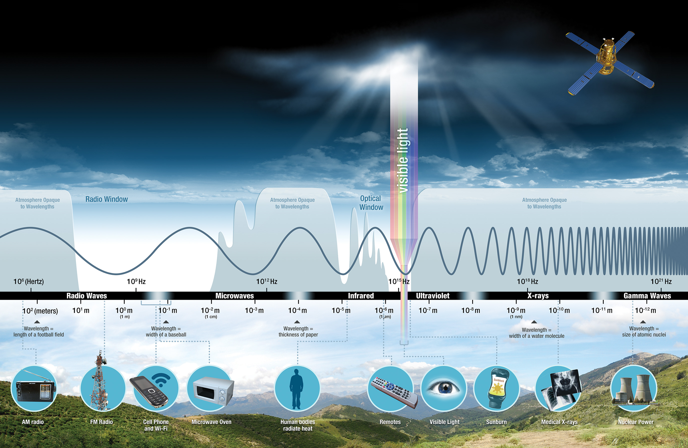

1 Week 1 - Introduction to Remote Sensing
1.1 Summary
In my first remote sensing class, I stepped into a world where satellites and sensors act like high-tech scouts, constantly transmitting data about our planet. Seeing how these eyes in the sky capture the world as it is helps us understand everything from urban sprawl to retreating glaciers.
Here’s what I learnt this week:
1.1.1 Remote sensing
Gather information about the Earth’s surface through sensors mounted on satellites or aircraft, which provides information where there are no ground-based measurements.
1.1.2 Types of sensors
Active sensors
This type of sensor illuminates its target and then measure the reflected light. Imagine the flash of a camera. It brightens its target. Next, it captures the return light. This is the same principle of how active sensors work. They can pass through clouds and work in the dark, such as X-rays, radar (e.g., synthetic aperture radar (SAR), laser radar (LIDAR)), which are commonly used for topographic mapping and forest altitude measurements.
Passive sensors
Measure reflected light emitted from the sun. When sunlight reflects off the Earth’s surface, passive sensors capture that light (e.g., the human eye, cameras, and multispectral sensors such as LANDSAT and Sentinel). They capture images by sensing reflected sunlight in the electromagnetic spectrum, which are commonly used in water resource management, climate change monitoring and disaster response.
1.1.3 Electromagnetic Waves (EW)
EW are the core of remote sensing technology, capturing and analyzing energy reflected or emitted by the Earth to discern surface characteristics. This is based on how various materials absorb and reflect different electromagnetic spectrum bands, allowing the identification and classification of surface substances and phenomena through specific bands’ reception. The figure below shows the different types of EV, which are arranged from longest to shortest wavelength. The longer the wavelength, the lower the frequency; and vice versa.

In addition, different wavelengths lead to different colour spectra, which is why we can see coloured images. For example, the blue colour of the sky is mainly due to the phenomenon of Rayleigh scattering in the atmosphere, which makes shorter wavelengths of blue light scatter more easily than longer wavelengths of light.
At sunrise or sunset there is much more atmosphere to pass through so more scattering occurs When the sun’s angle changes the blue light scatter doesn’t reach our eyes as the distance is increased. So longer wavelengths (e.g.reds and oranges) reach us.
1.1.4 Resolution
Resolution is one of the most important attributes of satellite imagery and will vary depending on the orbit of the satellite and the design of the sensor. For any data set, there are three types of resolution that need to be considered:
- Spatial Resolution: governs how “sharp” an image looks (MAXAR deliver clear, high spatial resolution images, but a limited spectral range)
- Spectral Resolution: the ability of the sensor to recognise finer wavelengths (Landsat and Sentinel-2 may have lower spatial resolution but detect a wider spectrum)
- Temporal Resolution: the frequency with which we can access new imagery
The Google Maps basemap provides a very high-resolution view of the globe free of charge, but it captures only a single moment in time, lacking a temporal aspect. This means if we’re interested in observing changes that occur over time, this basemap won’t be very helpful. The term “revisit rate” refers to the frequency at which a satellite returns to observe the same spot on Earth.
For the other two, spatial resolution determines the smallest visible detail size, while spectral resolution refers to the range of detectable spectra or colors by a satellite. For example, using a high-resolution camera allows clear visibility of tiny details, similar to how high spatial resolution satellite images can reveal fine ground features.
Conversely, imagine having glasses that don’t enhance clarity but allow seeing beyond the visible spectrum, like in infrared or ultraviolet. This capability, akin to high spectral resolution satellites, offers insights into unseen aspects such as plant health or material types.
The image below shows Gilette Stadium near Boston, and if we were to use only the naked eye we would think that all three green areas were grass, and would not be able to distinguish which was real grass and which was artificial plastic grass, but living plants strongly reflect parts of the spectrum of the sun’s radiation that we do not see (near-infrared). However, by looking at the NDVI overlay of the Sentinel-2 satellite image, the two patches of real grass in red can be clearly identified.

Why not build a sensor that combines high spatial, spectral and temporal resolution? Because it is difficult to combine all of the required functions into a single remote sensor, researchers must make trade-offs, understand the types of data that are more important for the specific field. For example, high temporal resolution is critical when studying weather over time, while higher spectral or spatial resolution is more important when studying seasonal vegetation changes.
1.2 Application
After understanding the basic concepts of remote sensing and related terminology, I began to delve into its application areas, which help us solve many real-world problems.

For example, using remote sensing, we can keep a close eye on active volcanoes, looking for any changes in their thermal profiles that might indicate an imminent eruption. This is critical in areas where volcanoes pose a risk to populations and infrastructure and where traditional observation methods are too dangerous.

Another impressive application is disaster management. After an earthquake, it is crucial to assess the damage quickly. Satellites routinely monitoring Earth from space and delivering data to support rapid damage mapping offer a unique tool to aid disaster management. This helps rescuers know where they are most needed, saving precious time and lives.
In agriculture, NDVI (Normalised Vegetation Index) is a very useful tool derived from remote sensing. It measures the health of vegetation by comparing the reflectance of near-infrared light (reflected by plants) to red light (absorbed by plants). In this way, farmers can track crop health, manage resources more efficiently, and even predict yields.
Remote sensing is truly an indispensable tool in our toolkit for effective management of the planet and its resources. I have to mention that the teacher mentioned a very interesting case study on illegal deforestation in Brazil, which aroused my great interest in GEE, and I am very much looking forward to it.
1.3 Reflection
My first remote sensing class took me on an exciting journey as we began to learn how to use technology to view our planet from above, opening a window to a new world perspective, allowing me to see the changes happening around the world without leaving home. The possibilities are endless, from how to track environmental changes, such as the shrinking of glaciers or the growth of cities, and how it can aid in disaster response, giving me a foundational understanding of remote sensing technology.
Although the technology of remote sensing is interesting, it is indeed complex. The course was filled with mind-boggling new terms and concepts that piqued my curiosity. I had a lot to learn about what types of data could be captured, how to analyze it, and the different ways to apply it. In an era of increasing climate change, being able to decipher and use this data for urban planning or disaster response is critical. Although the complexity of remote sensing can feel like a mountain to climb, I believe that with time and practical experience, I will no longer be afraid of it and it will prepare me to make a tangible difference in the world.üòä